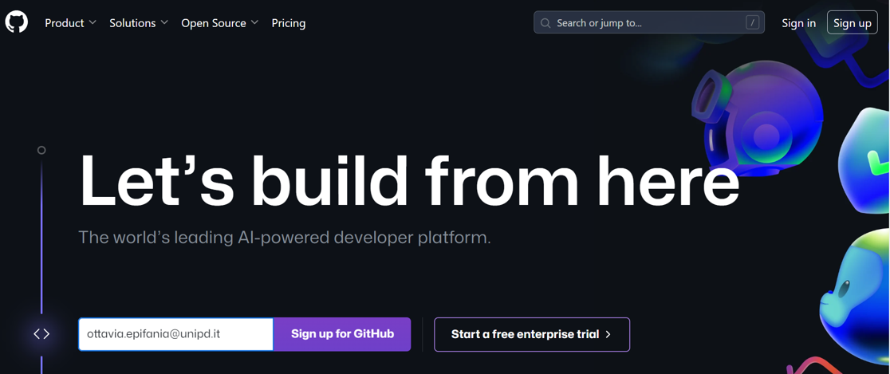
GitHub
1 Create a GitHub account
Go to the GitHub website, available at https://github.com/
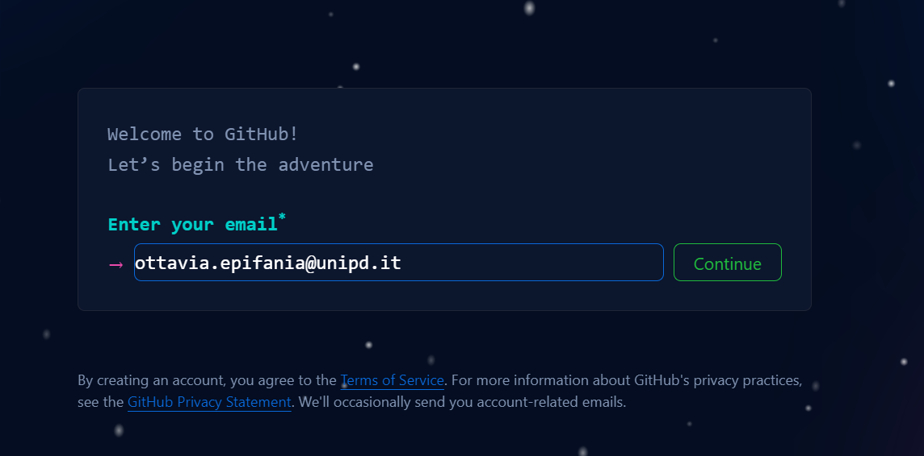
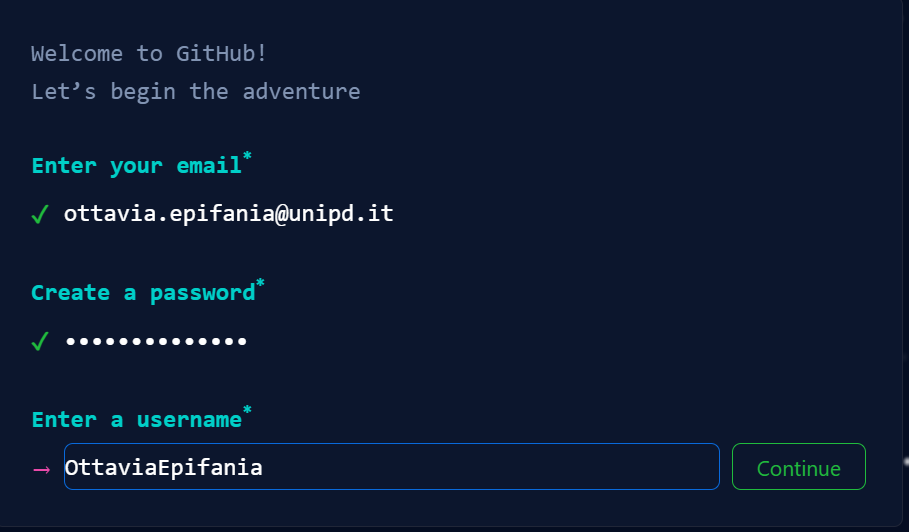
Solve the CAPTCHA and submit
2 Install GitHub Desktop
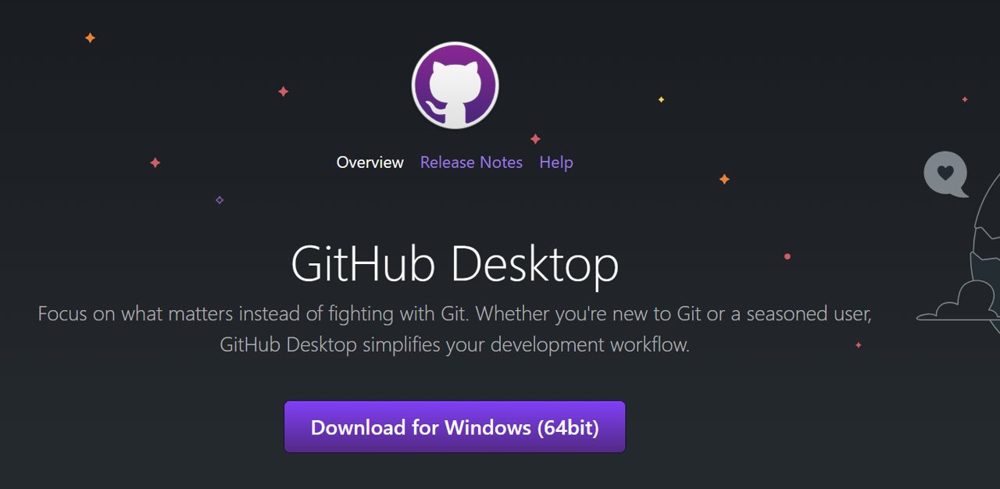
Once the installer is downloaded, follow the installation instruction. Sign in to your GitHub account
3 Repositories managment
The GitHub repositories are the folders containing the R Project:
3.1 Create new repository
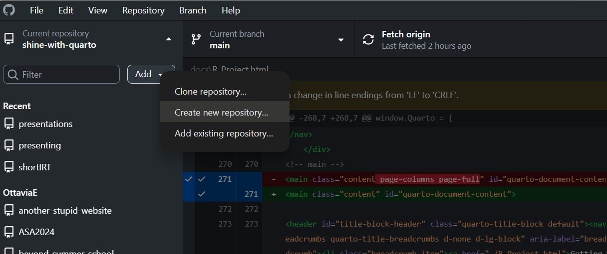
This initializes a new GitHub repository, where you can provide different information concerning its characteristics
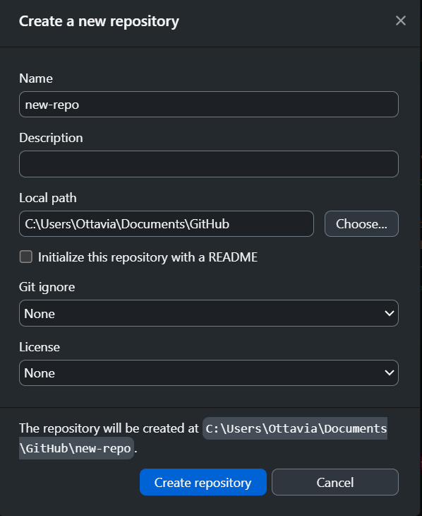
3.2 Add existing repository
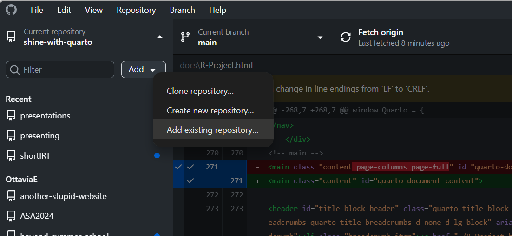
3.3 Publish the repositories
Once a repository is added (either by adding an existing one or creating a new one), it can be published and made available online for other people:
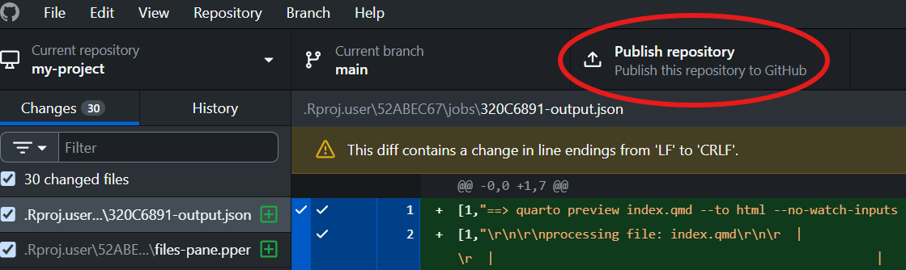
If you want your repository to be found by other users, remove the flag from the “Keep this code private”:
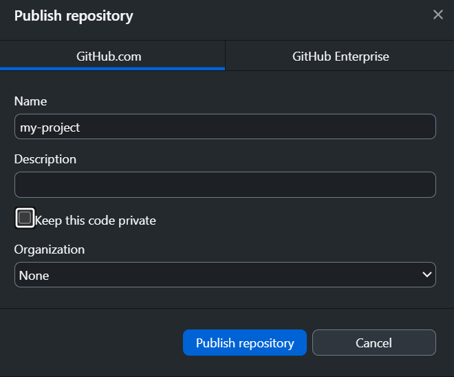
3.3.1 commit + push
Everything is ready for the commitment.
- Select specific files and commit them. The commit message is mandatory! It is useful for your future self, just to remember the changes you made, when and possibly why.
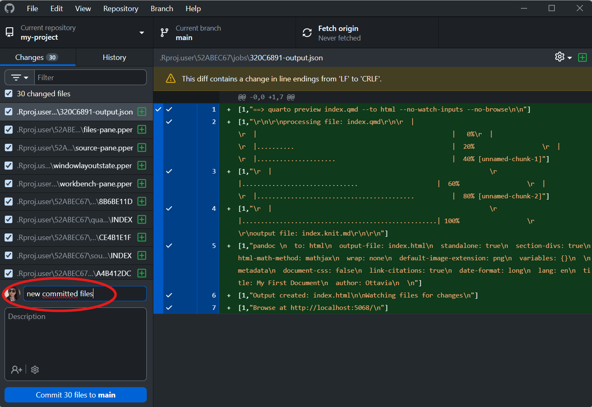
- The changes must be pushed to GitHub:
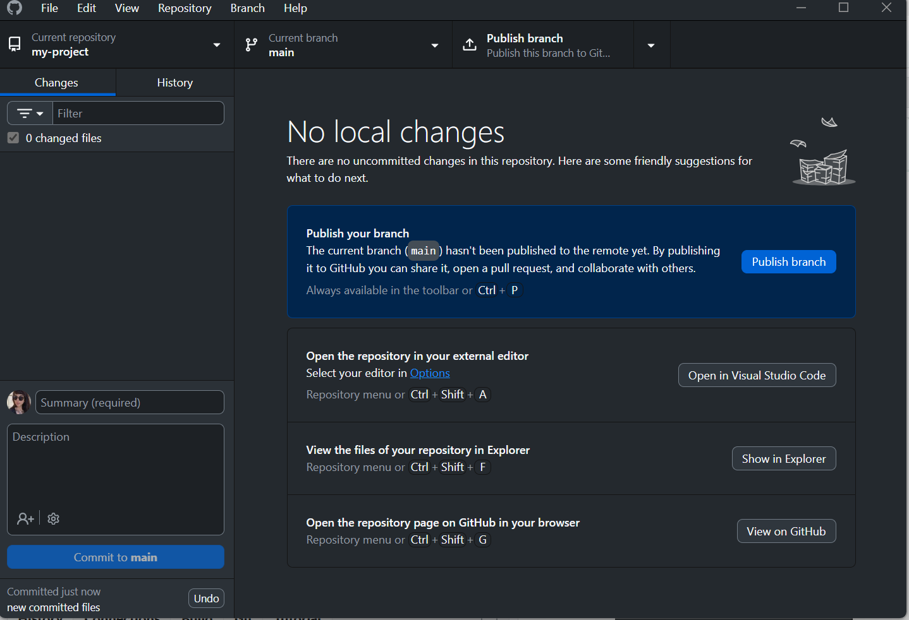
- Check whether the changes are live on GitHub:
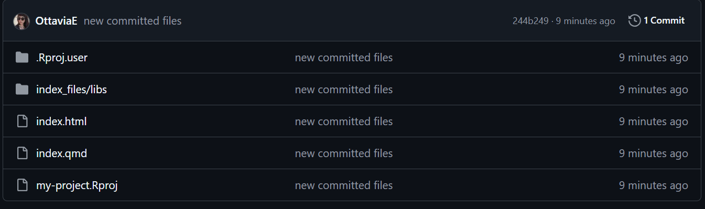
3.3.2 Licenses
Summarizing the differences between the types of licences:
| MIT | GNU GPL |
|---|---|
| Can be used in proprietary software | Derivative works must remain open source |
| Minimal restrictions | Requires source code disclosure upon redistribution |
| Maximizes flexibility and adoption | Ensures openness is preserved |
4 GitHub pages
The code is shared online, but it cannot be seen as a document, but only as a raw html code.
GitHub pages allows for hosting personal websites on the personal GitHub profiles, such as the html documents are rendered as document and not as code.
Each repository can be set to host the GitHub pages by opening the settings page of the repository and navigating to the Pages section:
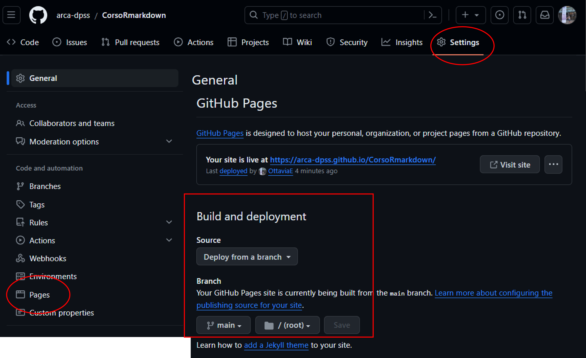
The main setting for the GitHub pages regards the deployment.
The main branch must be selected, and make sure that the folder for the deployment is set to root.
This is to check whether the pages are actually active:
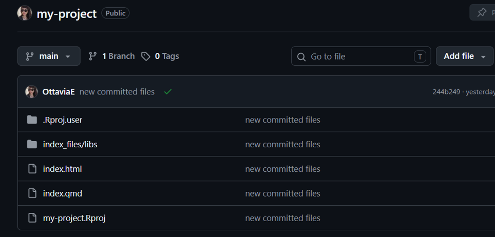
GitHub pages is on!
To transform your pages in an actual website, you need a functioning url:
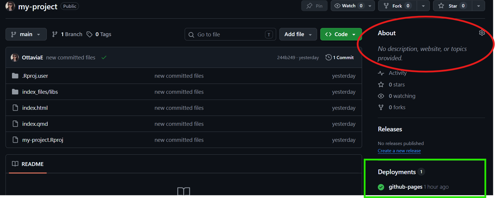
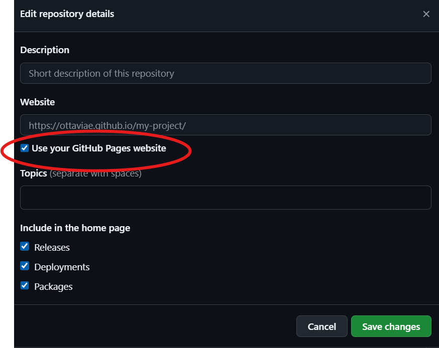
Now you have a working website!
As you can see, the index file has been taken as the default landing page of your website (Figure 1).
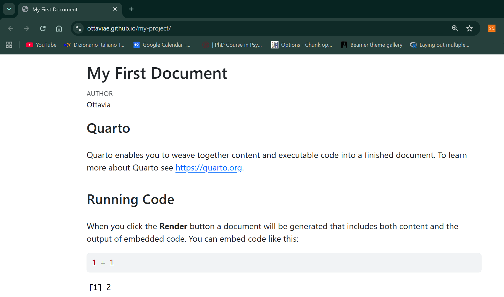
This means that whatever changes you do in you index file, they will be reflected on your website landing page if and only if you commit & push the local changes to GitHub, following the flow
flowchart TD
A[Edit index.qmd]
B[Render Quarto Project]
C{Render successful?}
D[Fix errors]
E[Review website locally]
F[Open GitHub Desktop]
G[Review changes]
H[Commit changes]
I[Push to GitHub]
J[Repository updated]
K[Website updated]
A --> B
B --> C
C -->|No| D
D --> B
C -->|Yes| E
E --> F
F --> G
G --> H
H --> I
I --> J
J --> K
This flow applies to any document you modify locally. In other words, to see the changes that you do locally online, you have to commit them and push them through GitHub Desktop.